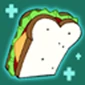
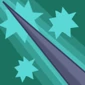
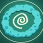

Cinnamon Bun is a mid range AP champion, focused on zone control and burst, with splashes of mixed damage via the auto reset on his Q and the attack buff on his E. Your main goal while playing CB should be to stop the enemy teams biggest threats from approaching your team's most vulnerable character.
Outside of teamfights you should mostly be in lane, as you can push waves hard and your passive gives you free sustain to make trades against whoever the enemy team sends to deal with you.

Passive - Perfect Sandwich
Your passive gives you moderate sustain, early on it's effectively a better version of Rattleballs' passive, but unless you are building health and/or cooldown reduction it quickly becomes mediocre, but still more effective than certain other passives.

Q - Lance Strike
This is your main source of damage in skirmishes, and also your main tool for clearing 3camps "consistently" (see W for an explanation.) Your Q is also your main source of healing given it is the lowest cooldown ability in your kit, so use it as often as possible.
W - Sticky Slide
Cinnamon Bun's dash, which basically leaves a PB Q in a line. In theory, this should be CB's main source of damage for wave clear and jungling, as well as zone control in fights, but unfortunately as of writing this guide it is bugged so that a significant amount of the time the W will cast without its hitbox active. This means it will not do any damage nor slow. This random chance for your otherwise most important skill means you can't count on it for anything other than mobility and should treat it as such during any part of the game that can actually influence your victory or defeat.

E - Ring of Frosting
Your E does a huge amount of damage, either over time or pressing E a third time to explode it early for a large amount of burst, remember that CB gains AD and AS while inside the circle(s).
Cinnamon Buns main strengths havent actually been elaborated on in the guide thus far, and that is in just how fast he can siege towers. With his above average wave clear and being the only character who's entire ability kit can damage towers, he is only rivaled by a late game auto attacker in how fast he can take out structures, and even then he has that potential far earlier in the game. It is a toxic playstyle with very little counterplay, as even if you die its generally worth it to take a tower, so split pushing should be your priority outside of fights.
Cinnamon Bun is unique to battle party in that he is an AP bruiser by design, with decent amounts of self sustain but without sacrificing damage.
Unfortunately, due to one of his abilities being plagued by a major bug (see abilities for more info), he is severely held back potential wise. Despite this he is still a relevant character in the meta due to his damage output and tower diving gimmick